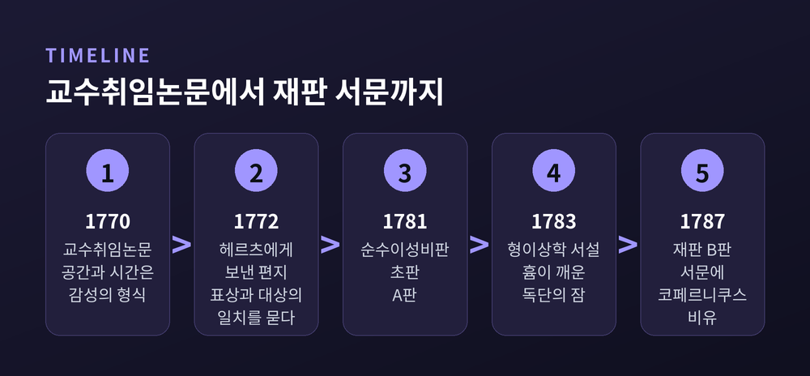
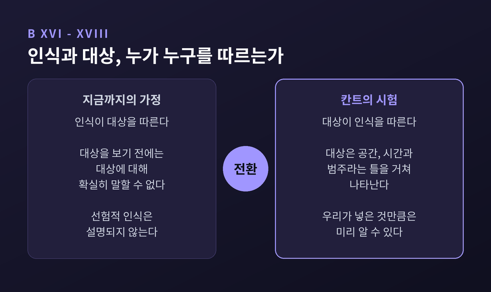
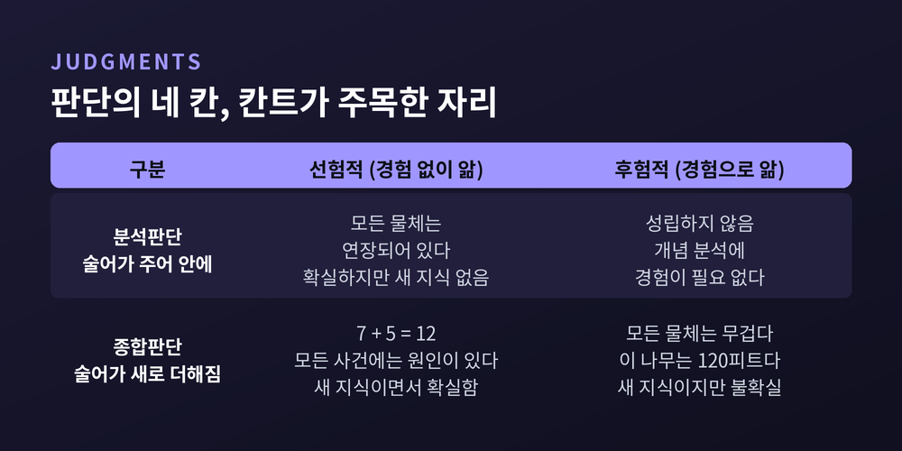
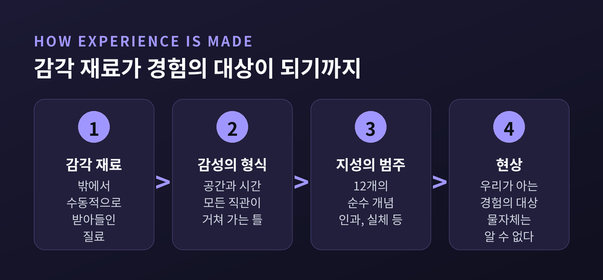
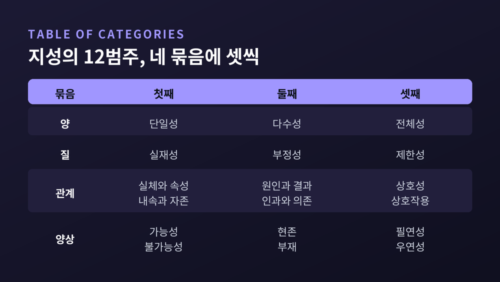

칸트 순수이성비판의 코페르니쿠스적 전환, 대상이 인식을 따른다는 뜻
오늘은 칸트 『순수이성비판』의 코페르니쿠스적 전환을 이야기해 보려 합니다. "인식이 대상을 따르지 않고 대상이 인식을 따른다"는 유명한 문장이 정확히 무슨 뜻인지, 그 문장을 떠받치는 개념들을 하나씩 짚어 보겠습니다.
먼저 요점 세 가지입니다.
- 칸트는 1787년 재판 서문에서, 대상이 우리 인식 능력의 형식을 따른다고 가정해 보자고 제안했습니다. 그래야 경험 이전에 대상에 대해 무언가를 확실히 아는 일, 곧 선험적 인식이 설명되기 때문입니다.
- 그 형식은 두 층입니다. 감성의 형식인 공간과 시간, 그리고 지성의 순수 개념인 12개의 범주입니다.
- 대가도 있습니다. 우리가 아는 것은 '현상'뿐이고, '물자체'는 끝내 알 수 없습니다. 이 구분을 어떻게 읽을지는 지금도 학자마다 갈립니다.

10년의 침묵 끝에 나온 책
『순수이성비판』은 1781년에 처음 나왔습니다. 6년 뒤인 1787년, 칸트는 상당 부분을 고쳐 쓴 제2판을 냅니다. 학자들은 초판 쪽수를 A, 재판 쪽수를 B로 표기합니다. 코페르니쿠스 비유가 담긴 대목은 재판 서문의 Bxvi–xviii입니다.
이 책에 이르는 길은 길었습니다. 1770년 칸트는 교수 취임 논문을 씁니다. 여기서 이미 감성과 지성을 서로 다른 두 능력으로 나누고, 공간과 시간을 감성의 주관적 형식이라고 보았습니다. 다만 이때는 지성이 감각 너머의 '예지계'를 직접 파악할 수 있다고 믿었습니다.
그 믿음은 오래가지 않았습니다. 1772년 2월 21일, 칸트는 제자이자 친구인 마르쿠스 헤르츠에게 편지를 씁니다. 대상에게서 아무 영향도 받지 않은 표상이 어떻게 그 대상과 맞아떨어질 수 있는지, 자신은 설명하지 못했다고 털어놓습니다. 스탠퍼드 철학백과(SEP)는 이 물음이 『순수이성비판』으로 가는 문을 열었다고 정리합니다.
그 뒤 칸트는 약 10년 동안 이렇다 할 저술을 내지 않았습니다. 그리고 1781년, 이 책이 나왔습니다. 초기 서평이 드물고 오해가 많자, 1783년에는 요점을 줄인 『형이상학 서설』을 따로 펴냈습니다. 그 서문에 흄의 문제 제기가 자신의 "독단의 잠"을 깨웠다는 고백이 실려 있습니다.

흄이 남긴 숙제
흄의 문제 제기는 이런 것이었습니다.
"모든 사건에는 원인이 있다." 우리는 이 문장을 의심 없이 받아들입니다. 그런데 흄은 이 믿음을 경험으로도, 순수한 논리로도 증명할 수 없다고 보았습니다. 큐볼이 공을 맞히는 장면을 수없이 보아도, 우리가 실제로 본 것은 '앞선 장면'과 '뒤따른 장면'의 반복일 뿐입니다. '원인'이라는 필연적 연결은 습관이 만든 기대에 가깝다는 것입니다.
합리론 쪽도 막혀 있었습니다. 순수 이성으로 세계를 증명하려 하면 "세계는 시간상 시작이 있다"와 "시작이 없다"가 둘 다 증명되는 곤란이 생겼습니다. 칸트는 이것을 이율배반이라 불렀습니다.
인터넷 철학백과(IEP)의 정리를 빌리면, 칸트는 두 진영 모두에 반대했습니다. 경험론에 맞서 마음은 백지가 아니라고 했습니다. 합리론에 맞서서는 마음과 무관한 세계를 순수 이성만으로 아는 일은 불가능하다고 했습니다.
문제의 문장 — 인식과 대상의 자리를 바꾸다
이제 그 유명한 대목을 볼 차례입니다. 재판 서문에서 칸트는 대략 이렇게 말합니다.
지금까지는 우리의 모든 인식이 대상을 따라야 한다고 가정해 왔다. 그러나 대상에 대해 선험적으로 무언가를 알아내려는 시도는 이 전제 아래서 모두 실패했다. 그러니 대상이 우리의 인식을 따라야 한다고 가정하면 더 나아갈 수 있는지 한번 시험해 보자. (Bxvi, 요약)
이어서 코페르니쿠스를 불러옵니다. 모든 천체가 관찰자 주위를 돈다고 가정해서는 천체 운동이 잘 설명되지 않았습니다. 그래서 코페르니쿠스는 관찰자를 돌게 하고 별들을 멈춰 세워 보았습니다. 칸트는 형이상학에서도 같은 시도를 해 보자고 제안합니다.
예전의 생각은 이랬습니다. 대상이 먼저 있고, 우리 인식은 그것을 거울처럼 비춘다.
칸트의 생각은 다릅니다. 대상이 우리에게 '대상으로' 나타나려면, 이미 우리 인식의 틀을 거쳐야 한다.
왜 이렇게 뒤집어야 했을까요. 이유는 '선험적 인식'에 있습니다. 인식이 대상을 따르기만 한다면, 대상을 보기 전에는 대상에 대해 아무것도 확실히 말할 수 없습니다. 반대로 대상이 우리 인식의 형식을 따른다면, 그 형식을 아는 만큼은 경험 전에도 확실히 알 수 있습니다. 칸트의 표현으로는 "우리는 사물에 대해 선험적으로는 우리 스스로 그 안에 넣은 것만 인식한다"(Bxviii)는 것입니다.
한 가지 짚어 둘 점이 있습니다. 칸트는 이 전환을 서문에서 '가설'이자 '실험'이라고 부릅니다. 코페르니쿠스도 처음에는 가설로 세웠고, 나중에 뉴턴의 법칙이 그것을 입증했다는 각주를 달아 두었습니다. 서문에서 먼저 가설로 내놓은 뒤, 본문에서 증명해 보이겠다는 구도입니다.
오해도 하나 풀어 두는 편이 좋겠습니다. 이 비유는 "모든 것이 마음이 만든 것"이라는 뜻이 아닙니다. SEP는 코페르니쿠스와 칸트의 공통점을 이렇게 정리합니다. 둘 다 현상을 설명할 때 관찰자의 몫을 계산에 넣었지만, 어느 쪽도 현상을 관찰자의 몫만으로 환원하지 않았다. 하늘의 겉보기 운동이 천체의 운동과 지구의 운동 둘 다에 달려 있듯, 우리 경험도 밖에서 받아들이는 감각 재료와 마음이 보태는 형식 둘 다에 달려 있습니다.

선험적 종합판단 — 이 전환이 풀려던 문제
칸트가 푼 문제를 한 문장으로 줄이면 이렇습니다. "선험적 종합판단은 어떻게 가능한가?"(B19)
낯선 용어지만, 두 가지 구분만 알면 됩니다.
- 분석판단: 술어가 주어 개념 안에 이미 들어 있는 판단입니다. "모든 물체는 연장되어 있다(공간을 차지한다)"가 예입니다. 물체라는 개념을 풀기만 해도 나옵니다.
- 종합판단: 술어가 주어 개념 밖에서 새로 더해지는 판단입니다. "모든 물체는 무겁다"가 그렇습니다.
- 선험적(a priori): 참임을 아는 데 경험이 필요 없습니다.
- 후험적(a posteriori): 경험을 통해서만 참임을 압니다.
분석판단은 확실하지만 새 지식을 주지 않습니다. 후험적 종합판단은 새 지식을 주지만 확실하지 않습니다. 칸트가 주목한 것은 그 사이, 새 지식을 주면서도 확실한 판단입니다. "7+5=12"에서 12라는 개념은 7에도, 5에도, 더하기에도 들어 있지 않습니다. "삼각형 내각의 합은 180도", "모든 사건에는 원인이 있다"도 같은 부류입니다.
IEP는 경험론자들이 '종합'과 '후험', '분석'과 '선험'을 같은 것으로 뭉뚱그리는 바람에 이 자리를 놓쳤다고 설명합니다. 칸트는 이 물음을 수학, 자연과학, 형이상학 세 영역으로 나눠 따져 묻습니다.

첫 번째 틀 — 공간과 시간이라는 감성의 형식
대상이 우리 인식을 따른다면, 그 '인식의 틀'은 무엇일까요. 첫 층은 감성, 곧 대상을 받아들이는 능력의 형식입니다. 칸트는 그것을 공간과 시간이라고 보았습니다.
당시 공간을 두고는 두 견해가 맞서 있었습니다. 뉴턴은 공간을 사물과 무관하게 존재하는 그릇처럼 보았습니다. 라이프니츠는 사물들 사이의 관계 질서로 보았습니다. 칸트는 둘 다 아니라고 답합니다. 공간과 시간은 우리가 사물을 받아들이는 방식, 곧 '직관의 형식'이라는 것입니다.
그래서 기하학이 가능합니다. 우리가 경험하는 모든 대상은 공간이라는 틀을 거쳐 들어옵니다. 그러니 공간의 성질을 다루는 기하학의 명제는 개별 대상을 일일이 확인하지 않아도 모든 대상에 들어맞습니다. 시간도 마찬가지입니다. '먼저'와 '나중', '동시'를 경험하려면 이미 시간 속에서 표상하는 능력이 있어야 합니다.
그렇다고 공간과 시간이 환상이라는 뜻은 아닙니다. 칸트는 공간과 시간이 "초월적으로는 관념적"이지만 "경험적으로는 실재적"이라고 말합니다. 우리에게 나타나는 모든 것은 예외 없이 공간과 시간 속에 있습니다. 다만 우리 감성을 빼고 사물 그 자체를 생각한다면, 거기에 공간과 시간이 있다고 말할 근거는 없다는 것입니다.
두 번째 틀 — 12개의 범주
공간과 시간만으로는 아직 '무엇'을 아는 단계에 이르지 못합니다. 받아들인 재료를 묶어 대상으로 생각하는 능력, 곧 지성이 필요합니다. 칸트의 가장 유명한 문장 가운데 하나가 여기서 나옵니다.
"내용 없는 사고는 공허하고, 개념 없는 직관은 맹목이다." (A51/B75)
지성이 쓰는 가장 기본적인 개념을 칸트는 '범주'라고 불렀습니다. 판단의 논리적 형식 12가지에서 끌어낸 12개로, 양·질·관계·양상 네 묶음에 셋씩 들어갑니다. 인과성도 그중 하나입니다.
바로 여기서 흄에 대한 답이 나옵니다. 칸트는 인과 개념이 경험에서 나오지 않는다는 흄의 지적을 받아들입니다. 대신 방향을 뒤집습니다. 인과라는 틀 없이는 애초에 '객관적 사건의 연쇄'를 경험할 수조차 없다는 것입니다. 그러므로 "모든 변화는 원인과 결과의 법칙에 따라 일어난다"는 명제는 경험에서 배운 것이 아니라, 경험을 가능하게 하는 조건이 됩니다.
이것을 증명하려는 논증이 '범주의 초월적 연역'입니다. SEP가 철학사에서 가장 복잡하고 어려운 텍스트 가운데 하나로 꼽는 대목이기도 합니다. 핵심만 추리면, 범주를 통해서만 경험이 가능하므로 범주는 모든 경험 대상에 필연적으로 적용된다는 것입니다.


현상과 물자체 — 전환이 치른 대가
"우리 스스로 넣은 것만 선험적으로 안다." 이 원리에는 뒷면이 있습니다. 우리가 넣지 않은 것, 곧 우리 인식 능력과 무관한 사물 그 자체는 알 수 없다는 것입니다.
칸트는 이를 현상과 물자체의 구분으로 정리합니다. 우리가 아는 것은 공간·시간과 범주를 거쳐 나타난 '현상'입니다. 그 너머의 '물자체'는 실재하되 인식되지 않는 것으로 남습니다(Bxix–xx). 그 결과 신, 영혼, 자유에 대한 이론적 지식은 불가능해집니다.
칸트는 이것을 손실로만 보지 않았습니다. "신앙에 자리를 마련하려고 지식을 제한해야 했다"(Bxxx)는 말이 여기서 나옵니다. 과학의 결정론이 현상에만 적용된다면, 물자체의 차원에는 자유가 설 자리가 남습니다. SEP는 이 전환 덕분에 자연의 형이상학과 도덕의 형이상학이 함께 가능해졌다고 봅니다.
다만 이 구분을 어떻게 읽을지를 두고는 해석이 크게 갈립니다. SEP는 "표준 해석이라는 것은 없다"고까지 적습니다.
| 해석 | 핵심 주장 | 주요 비판 |
|---|---|---|
| 두 세계(두 대상) 해석 | 현상과 물자체는 서로 다른 두 부류의 대상. 칸트 생전 최초 서평 이래 전통적 독법 | 알 수 없다면서 존재하고 우리를 촉발한다고 말하는 것은 모순 아닌가 |
| 두 측면 해석 - 속성 버전 (랭턴) | 같은 대상이 드러나는 관계적 속성과 드러나지 않는 내재적 속성을 가짐 | 드러나지 않는 속성도 알 수 없기는 마찬가지 |
| 두 측면 해석 - 관점 버전 (앨리슨) | 같은 대상을 인간의 인식 조건에서 보느냐, 그 조건을 떼고 생각하느냐의 구분 | 텍스트보다 칸트의 기획을 좁게 읽는다 |
두 세계 해석에 대한 가장 날카로운 비판은 칸트 생전에 이미 나왔습니다. 야코비는 1787년, 물자체라는 전제 없이는 칸트 체계에 들어갈 수 없고, 그 전제를 가지고는 체계 안에 머물 수 없다고 꼬집었습니다. 시간도 인과도 없다는 물자체가 어떻게 우리 감각을 '촉발'할 수 있느냐는 물음입니다. 두 측면 해석은 이 부담을 덜어 보려는 시도지만, 칸트가 현상을 '마음속 표상'이라고 부른 구절도 적지 않습니다. 어느 한쪽이 텍스트 전체를 깔끔하게 설명한다고 보기는 어렵습니다.
정말 '코페르니쿠스적'이었을까
이름에 대한 반론도 있습니다. 러셀은 『인간의 지식』(1948)에서, 코페르니쿠스가 인간을 우주의 중심에서 끌어내렸는데 칸트는 다시 인간을 중심에 앉혔으니 오히려 "프톨레마이오스적 반혁명"이라 불러야 한다고 꼬집었습니다.
반대편의 답은 이렇습니다. 비유의 요점은 '누가 중심인가'가 아니라 '가설을 바꾸니 설명이 나아졌다'는 데 있다는 것입니다. 지구가 돈다는 가설이 천체 운동을 더 잘 설명했듯, 대상이 인식을 따른다는 가설이 선험적 인식을 더 잘 설명한다는 뜻이라는 것입니다. 앞서 본 SEP의 정리, 곧 관찰자의 몫을 설명에 넣는다는 해석도 이쪽에 가깝습니다.
용어 자체에도 단서가 필요합니다. 칸트가 서문에서 쓴 말은 '사고방식의 혁명'입니다. '코페르니쿠스적 혁명'이라는 이름은 칸트 사후에 널리 퍼진 표현이라고 지적하는 연구자들이 있습니다.
한계도 분명합니다. 칸트는 기하학이 선험적 종합판단이라고 보았는데, 이후 비유클리드 기하학과 일반상대성이론이 등장하면서 이 주장이 반박되었다는 평가가 흔합니다. 다른 한편으로는 비유클리드 기하학이 "공간은 직관의 형식"이라는 칸트의 핵심 테제까지 무너뜨리지는 않는다는 반론도 있습니다. "7+5=12"가 정말 종합판단인지도 여전히 논쟁거리입니다.
마지막으로 한 가지만 덧붙이겠습니다.
칸트의 전환을 "세상은 마음먹기에 달렸다"로 읽으면 핵심을 놓칩니다. 그가 한 일은 앎의 조건과 한계를 동시에 그은 것에 가깝습니다. 우리가 경험하는 세계에 대해서는 확실한 지식이 가능하다. 대신 그 확실성은 우리 인식의 틀이 닿는 곳까지만 유효하다. 이 두 문장이 한 몸입니다.
저는 이 전환을 인간의 오만보다는 겸손으로 읽는 편이 더 정확하다고 생각합니다. 물론 물자체를 둘러싼 긴장은 250년 가까이 지난 지금도 풀리지 않았습니다.
'무엇을 아는가를 묻기 전에, 어떻게 아는가를 먼저 묻는다.'
칸트를 지금 다시 읽을 이유가 있느냐고 물으신다면, 그 순서를 뒤집는 연습이 여전히 드물기 때문이라고 답하겠습니다.